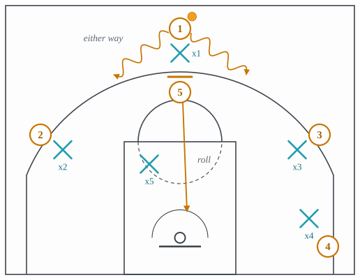

On-ball screens
Screens for the player with the ball, and the family that grew out of the pick-and-roll.
All families · 15 terms · 13 full, 0 partial, 2 short
Double drag
Two drag screens in a row from two trailing bigs; typically the first pops and the second rolls.

Why it is run. Two screens put three attackers in one action against three defenders who arrived at different times; the first pops and the second rolls, so one defender cannot cover both.
What beats it. The two screeners’ defenders agreeing before the screens who has the pop and who has the roll, and the ball defender chasing over both.
Drag screen
Also: drag
A ball screen set by a trailing big while the defense is still retreating.

Why it is run. A ball screen set while the screener’s defender is still retreating is a screen the defense has not yet decided how to guard; it buys a two-on-one before the help has assignments.
What beats it. The screener’s defender sprinting back level with the screen, then icing it to the sideline.
Flat screen
A ball screen set at the top of the floor with the screener’s back square to the baseline, so the handler can come off it to either side.

Why it is run. A screen with an angle tells the defense which way the handler is going, and the defense can send him the other way; a flat screen has no angle, so the on-ball defender cannot ice it and has to guess, and the big’s defender has to be ready for a drive to either side.
What beats it. Switching it, since a switch does not care which way the handler goes; or the big’s defender dropping to the free-throw line and meeting the drive on whichever side it comes.
Ghost screen
The screener runs at the handler’s defender as if to screen, makes no contact and slips out to the arc.

Why it is run. A screener who threatens the screen and runs to the arc without contact leaves the handler’s defender behind a screen that never came and the screener’s defender guarding a roll that never comes.
What beats it. Guarding the screen only once it is set, or a switch called early enough that the ghost is picked up at the arc.
Pick-and-roll
Also: PnR, ball screen
An on-ball screen after which the screener rolls to the rim, forcing two defenders to handle two threats.

Why it is run. A screen for the ball puts the handler’s defender behind the ball and forces the screener’s defender to help; the roller behind him is then unguarded. Two defenders, two threats, one of them late.
What beats it. A coverage that decides in advance which threat to concede; the drop gives up the mid-range pull-up to take away the roll and the drive.
Pop
Also: pick-and-pop
The screener stepping out to the perimeter for a shot after the screen rather than rolling.

Why it is run. A screener who can shoot punishes the drop, because the dropping defender is at the free-throw line guarding a drive while his man shoots a three above him.
What beats it. Keeping the screener’s defender attached, by switching the screen or playing it at the level.
Ram
Also: ram screen, screen-the-screener
A pin-down for the big just before he sets the ball screen, so his defender arrives late to the pick-and-roll.

Why it is run. A pin-down on the screener’s defender just before the ball screen makes that defender a step late, so whatever coverage the defense planned is played by a man who is still running.
What beats it. Switching the pin-down so the nearest defender guards the ball screen, or the screener’s defender going under the pin-down and beating the screener to the spot.
Roll
The screener turning and running to the rim after the screen.
Screen
Also: pick
A stationary player placing his body in a defender’s path to free a teammate.
Short roll
Also: short-rolled
The screener rolling only to the free-throw line to catch and make a play against a defense that has trapped or switched.

Why it is run. Against a trap the screener stops at the free-throw line, catches the pass out, and has three teammates against three defenders, with the weak-side low man unable to guard two of them.
What beats it. A trap fast enough to make the pass out a turnover, or an X-out rotation that covers two spots with one man for the two seconds the trap needs to recover.
Slip
The screener cutting to the rim before the screen is set, punishing a defense that jumped early to the screen.

Why it is run. Two defenders who step up to a screen before it is set are two defenders above the play; the screener who cuts to the rim instead is behind both of them.
What beats it. The screener’s defender staying between him and the rim until the screen is actually set, or a low man who tags the slip early.
Snake dribble
After a ball screen, the handler cuts back across in front of the trailing defender, keeping him on his back and playing two-on-one with the dropping big.

Why it is run. Cutting back across the chasing defender keeps him on the handler’s back and leaves the handler alone against the dropping big while the roller comes down the far side.
What beats it. The chaser going under the screen so there is nobody to snake in front of, or the big playing at the level so there is no room to change direction.
Spain pick-and-roll
Also: stack pick-and-roll
A pick-and-roll with a third player back-screening the roller’s defender and then popping to the arc.

Why it is run. A back screen on the roller’s defender frees the roller to the rim, and the back-screener then pops to the arc, so the drop coverage loses the defender it depends on and gains a shooter to guard.
What beats it. Switching the back screen so the shooter’s defender takes the roller, or the ball defender going under the first screen so the handler never turns the corner.
Step-up screen
A ball screen set with the screener’s back to the baseline, sending the handler toward the baseline rather than the middle.

Why it is run. A screen set from below sends the handler toward the baseline, where a coverage built to force everything to the sideline has no rule for him.
What beats it. Switching it, or a big who plays it at the level and turns the handler back toward the middle.
Twist
Also: re-screen
A second ball screen set from the other side right after the first, so the handler changes direction on the defense.

Why it is run. A second screen on the handler’s other shoulder gives the defense the same problem in the opposite direction while both defenders are still leaning toward the first.
What beats it. The ball defender going under the second screen and conceding the pull-up, or a big who plays both screens at the level and never leans.